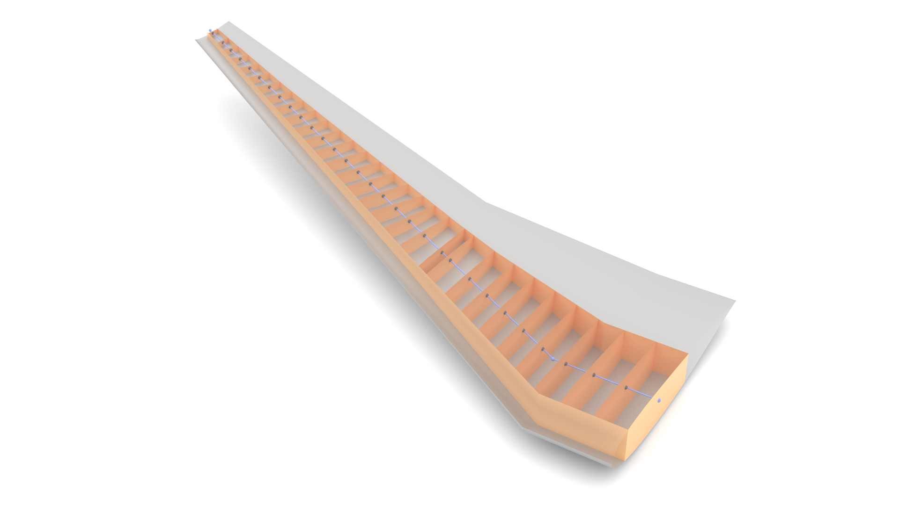

Example CPACS files are kept in the repository, next to the schema they belong to.
The examples can be downloaded from GitHub. If you have an interesting CPACS file — from a project, a study, or a piece of course work — and would like to share it with other users, we would be happy to add it to the example folder.
Browse the examples